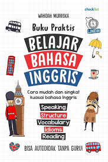

Selamat Datang!
Selamat datang di dunia yang penuh dengan keajaiban bahasa! Di sini, Anda akan menemukan beragam informasi menarik mengenai berbagai bahasa yang ada di seluruh dunia, mulai dari bahasa yang paling banyak digunakan hingga bahasa yang jarang diketahui orang. Kami juga akan berbagi tips dan strategi efektif untuk membantu Anda belajar dan menguasai bahasa-bahasa ini dengan lebih mudah dan menyenangkan. Jadi, siapkan diri Anda untuk memulai perjalanan yang seru dan penuh tantangan dalam menjelajahi keindahan dan keunikan setiap bahasa. Mari kita mulai petualangan belajar bahasa bersama!
Bahasa-Bahasa di Dunia
Bahasa Inggris
Bahasa Inggris adalah bahasa internasional yang paling banyak digunakan, dengan lebih dari 1,5 miliar penutur di seluruh dunia. Bahasa ini berfungsi sebagai jembatan komunikasi antar negara, tidak hanya di negara-negara berbahasa Inggris seperti Amerika Serikat dan Inggris, tetapi juga di banyak negara lain. Bahasa Inggris sangat penting dalam bisnis, pendidikan, dan teknologi, serta menjadi bahasa pengantar di banyak institusi terkemuka. Kemampuan berbahasa Inggris membuka peluang kerja dan memperkaya pengalaman dalam perjalanan serta menjalin hubungan dengan orang-orang dari berbagai latar belakang. Dengan mempelajari Bahasa Inggris, Anda tidak hanya meningkatkan keterampilan linguistik, tetapi juga memahami budaya yang berbeda.
Bahasa Spanyol
Bahasa Spanyol adalah salah satu bahasa yang paling banyak digunakan di dunia, dengan lebih dari 580 juta penutur. Bahasa ini merupakan bahasa resmi di 21 negara, termasuk Spanyol, Meksiko, dan banyak negara di Amerika Latin. Bahasa Spanyol kaya akan budaya dan sejarah, menjadikannya penting dalam bidang seni, musik, dan sastra. Mempelajari Bahasa Spanyol membuka peluang untuk berkomunikasi dengan jutaan orang dan memahami budaya yang beragam. Selain itu, kemampuan berbahasa Spanyol sangat berharga di dunia bisnis global saat ini.
Bahasa Mandarin
Bahasa Mandarin adalah bahasa resmi Tiongkok dan salah satu bahasa yang paling banyak dipelajari di dunia, dengan lebih dari 1,1 miliar penutur. Bahasa ini memiliki karakter unik dan sistem nada yang berbeda, membuatnya menarik untuk dipelajari. Menguasai Bahasa Mandarin membuka peluang untuk berkomunikasi dengan lebih banyak orang dan memahami budaya Tiongkok yang kaya.
Bahasa Korea
Bahasa Korea adalah bahasa resmi di Korea, dikenal dengan sistem penulisan Hangul yang unik. Saat ini, Bahasa Korea semakin populer di seluruh dunia, terutama berkat budaya K-Pop dan drama Korea. Mempelajari bahasa ini memungkinkan Anda memahami lebih dalam tentang budaya Korea yang kaya dan dinamis.
Tentang Belajar Bahasa
Belajar bahasa baru adalah cara yang sangat efektif dan menarik untuk memperluas wawasan serta memperkaya pengalaman hidup Anda. Saat Anda mempelajari bahasa asing, Anda tidak hanya sekadar memahami kata-kata atau frasa, tetapi juga mulai merasakan cara pandang dan perspektif budaya yang berbeda dari masyarakat yang menggunakan bahasa tersebut. Ini membuka pintu untuk memahami kebiasaan, tradisi, seni, sejarah, dan cara hidup yang mungkin sebelumnya terasa asing atau jauh. Anda akan mulai melihat dunia dengan sudut pandang yang lebih luas dan menghargai keragaman budaya yang ada di sekitar Anda. Selain itu, kemampuan untuk berkomunikasi dalam bahasa lain dapat memberikan dampak positif yang signifikan dalam kehidupan profesional Anda. Banyak perusahaan global mencari individu yang bisa berbicara lebih dari satu bahasa, karena kemampuan ini memungkinkan mereka untuk berinteraksi dengan klien atau mitra dari berbagai negara. Ini bisa memberi Anda keuntungan dalam mendapatkan pekerjaan atau promosi di tempat kerja. Tidak hanya itu, mempelajari bahasa baru juga memperkuat keterampilan berpikir kritis, meningkatkan daya ingat, serta kemampuan multitasking. Bahkan beberapa penelitian menunjukkan bahwa belajar bahasa asing dapat membantu menjaga kesehatan otak dan mencegah penurunan kognitif di usia tua. Dengan semua manfaat ini, belajar bahasa baru bukan sekadar hobi—ini adalah langkah yang dapat memperkaya hidup Anda secara pribadi dan profesional. Jadi, jika Anda ingin memperluas jaringan pertemanan internasional, memperdalam pemahaman budaya, atau membuka peluang baru dalam karier, mempelajari bahasa baru adalah keputusan yang tepat!
Sumber Belajar
-
Aplikasi Pembelajaran
Jelajahi dunia bahasa dengan mencoba aplikasi seperti Duolingo, Memrise, atau Rosetta Stone. Aplikasi ini menawarkan pengalaman belajar yang interaktif dan menyenangkan, memungkinkan Anda untuk belajar sambil bermain. Dengan berbagai latihan yang menarik, mulai dari kuis hingga tantangan berbicara, Anda akan merasa seperti sedang berpetualang dalam proses pembelajaran. Tidak hanya itu, Anda juga dapat berlatih kapan saja dan di mana saja, sehingga belajar bahasa menjadi lebih fleksibel dan sesuai dengan gaya hidup Anda. Bergabunglah dengan jutaan pengguna lainnya dan temukan betapa menyenangkannya belajar bahasa baru!

-
Video YouTube
Jangan lewatkan kesempatan untuk memperluas pengetahuan bahasa Anda dengan mengikuti channel YouTube seperti Easy Languages dan Learn English with Emma. Channel-channel ini menyajikan konten video yang tidak hanya menarik, tetapi juga informatif. Dengan berbagai topik menarik, Anda bisa belajar bahasa dengan cara yang menyenangkan, mulai dari percakapan sehari-hari hingga tips tata bahasa. Setiap video dirancang untuk membantu Anda memahami nuansa bahasa dan budaya dengan lebih baik. Bergabunglah dengan komunitas belajar mereka dan rasakan manfaat dari pembelajaran visual yang dapat meningkatkan keterampilan mendengar dan berbicara Anda!

-

Buku Belajar
Manfaatkan buku belajar bahasa yang telah terbukti efektif, seperti "Fluent in 3 Months" karya Benny Lewis. Buku ini menawarkan panduan praktis dan strategi inovatif untuk membantu Anda belajar bahasa baru dengan lebih cepat dan efisien. Dengan pendekatan yang berbasis pada penggunaan bahasa dalam konteks nyata, Benny memberikan tips yang memudahkan Anda untuk berkomunikasi dengan percaya diri sejak hari pertama. Selain itu, Anda akan menemukan teknik-teknik motivasi dan cara mengatasi tantangan yang umum dihadapi oleh para pembelajar bahasa. Jadikan buku ini sebagai teman setia dalam perjalanan belajar Anda, dan rasakan transformasi kemampuan bahasa Anda!
Kontak
Jika Anda memiliki pertanyaan, saran, atau bahkan ingin berbagi tips berharga mengenai pengalaman belajar bahasa Anda, kami sangat senang mendengarnya! Jangan ragu untuk menghubungi tim kami melalui email di info@belajarbahasa.com. Kami percaya bahwa setiap pengalaman dan pengetahuan yang Anda miliki dapat menjadi inspirasi dan sumber belajar bagi orang lain. Mari kita bangun komunitas yang saling mendukung dan berbagi, agar bersama-sama kita dapat menjelajahi dunia bahasa dengan lebih mendalam dan menyenangkan. Kami menantikan kabar dari Anda!